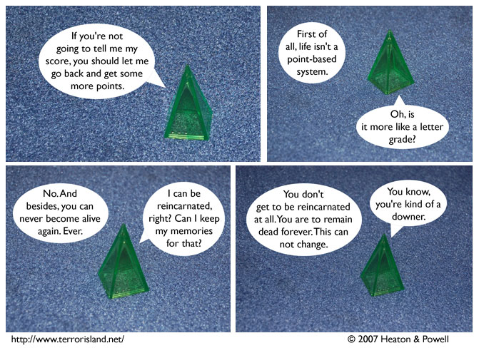

Strip #177
— Monday, July 30, 2007
For reals
Notes, Thoughts, &c.
Ben’s Notes
This strip takes place in an area Lewis and I have been calling “the Blue.” I think it’s just one part of the afterlife, and other dead people are elsewhere, but to be honest, I’m not entirely sure how that stuff works.
Lewis’s Notes
The time I usually take to come up with comments was monopolized by Guitar Hero 2 Encore: Rock the Eighties. Sorry.